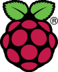
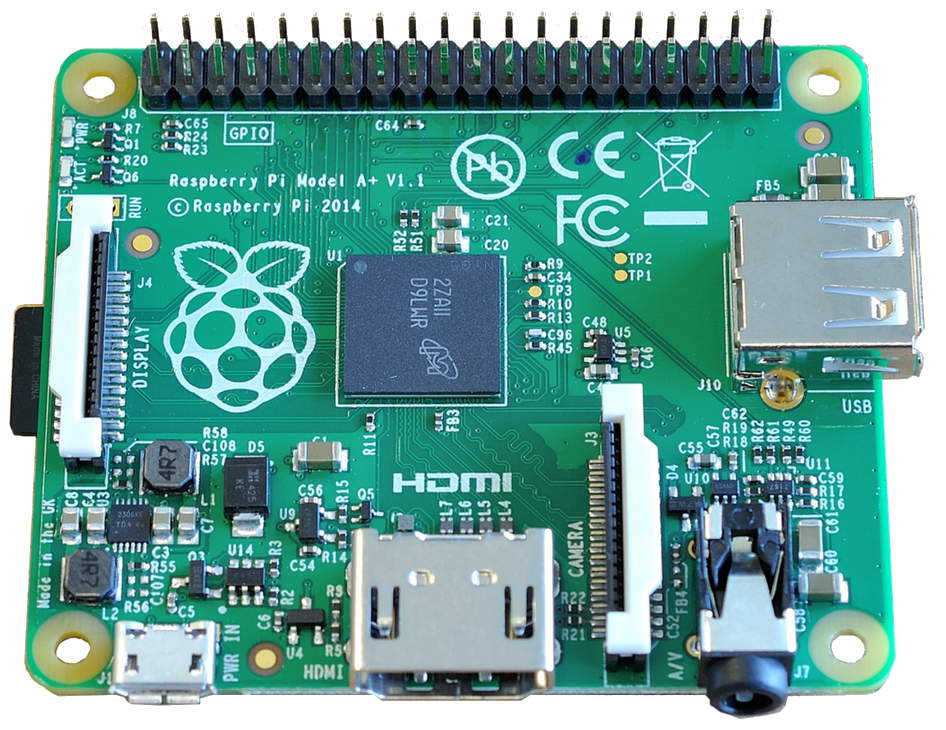
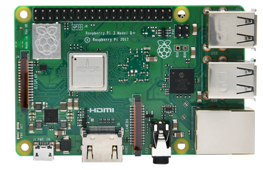
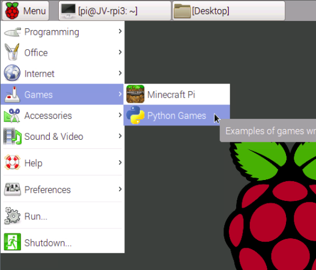

So you want to learn more about the raspberry pi? well you came to the right place.

About the Pi
The Raspberry Pi is a series of small single-board computers developed in the United Kingdom by the Raspberry Pi Foundation to promote teaching of basic computer science in schools and in developing countries. According to the Raspberry Pi Foundation, more than 5 million Raspberry Pis were sold by February 2015, making it the best-selling British computer.
Models
Here are some of the most popular Raspberry Pi’s to get you started.
-
25$ Raspberry Pi Model A+ 512MB RAM ARMv8 1.4GHz CPU
 -
35$ Raspberry Pi Model B+ 1GB RAM ARMv8 1.4GHz CPU
 -
5$ Raspberry Pi Zero v1.3 512MB RAM 1GHz single-core CPU

Setup
First you need to have a bootable SD card. You can buy one online, or make one yourself (read more). Then you put the card in your Pi, and boot it up. You should see an installation guide, asking you which linux distro you wan’t to install. This totally depends on what you plan on using your Pi for. I’m currently rocking a Debian desktopless environment on my home server.
